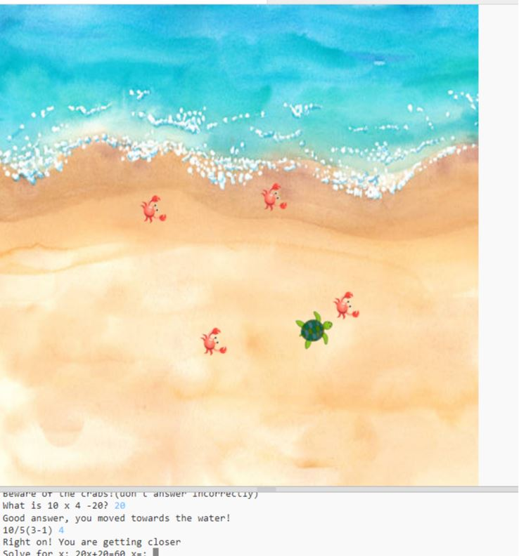
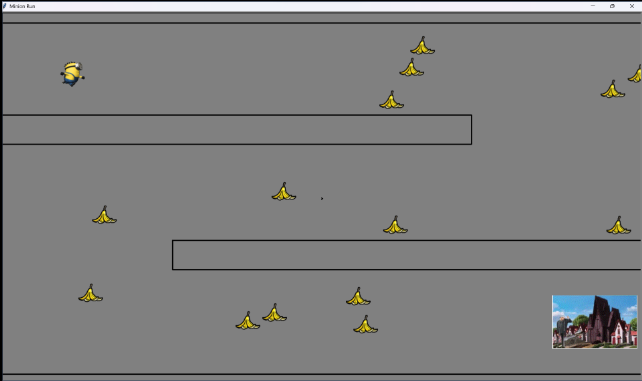
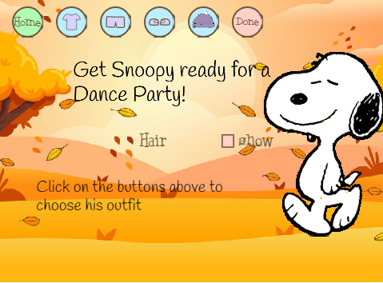
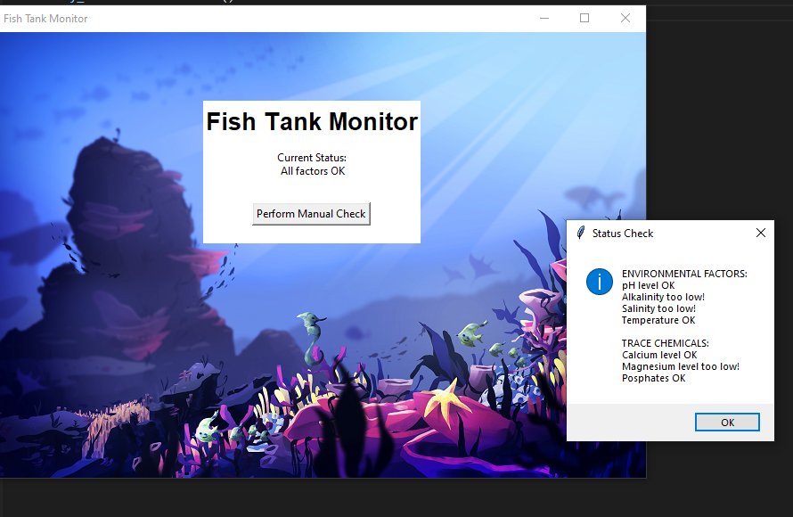
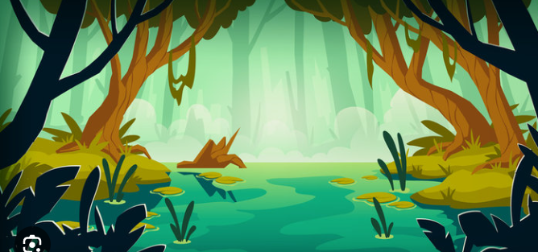

Home
Portfolio
About Me
This is my Portfolio Page!
1.1.9 Project-Lead a Baby Turtle to Sea

In this project, Varsha and I created a game that asks the player to solve math problems of
increasing difficulty to try to lead a baby turtle to sea. If the user gets a question wrong,
the turtle will be eaten by a predator and the game will restart.
1.2.5 Project-Mini Minion Run.

Amber and I created a game where the player tries to move the minion Stuart through a maze
to navigate him back to Gru's house while avoiding the banana peels. We created functions
throughout our program to avoid duplications of our code and had the program respond to
user events like clicking the arrows and g key
Scratch Snoopy Dressup

Hope and I made a game where the player can select different clothes and accesories to dress up
Snoopy with to go to a dance party. We used different costumes, backgrounds, sounds
and animations throughout the code to meet the requirements.
a pHishy Fish Tank.

Atish and I worked to debug and identify breeches in the code of a companies fish tank. We used
the debugging terminal in VS code to find the bugs and fix them.
4.1.4 Project-Strong Acids and Bases simulation.

Renee and I used Netlogo to investigate a simulation about strong acids and bases
and how they react together while in a solution. We identified the different turtles
patches, and randomness throughout the code as well as the inclusions and exclusions in
the simulation.
Rover Data Project .

Arshan, Hope and I analyzed data from a lost rover to determine its location on an unknown
planet. We seperated the data into 4 charts, a light sensor, sound sensor, temperature
sensor and gyroscope chart. We came to the conclusion that the rover was located in the
marsh lands, in terms of temperature, we can see a slight and steady climb as the day goes on.
For gryoscope and light the robot seems to be making different movements except towards the
end where it reaches a point with drastically more light, likely from a clearing in the marsh.
The sound is constant because of the background noise from the insects.